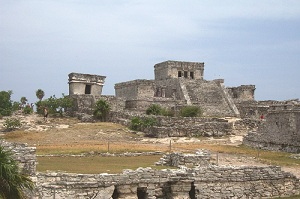

Mayan Ruins of Tulum
The Mayan ruins of Tulum are located on the Yucatan peninsula in Quintana Roo, Mexico. Tulum was built around 1200 AD and is one of the best preserved coastal Mayan ruins in existence today. If you have plans to visit the Yucatan peninsula, be sure to visit Tulum.
